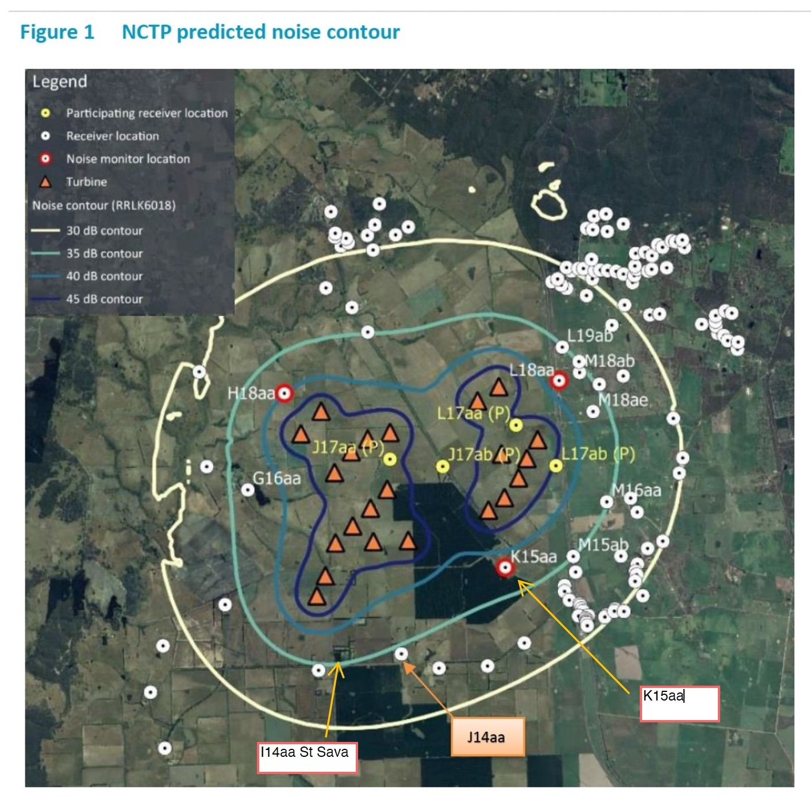
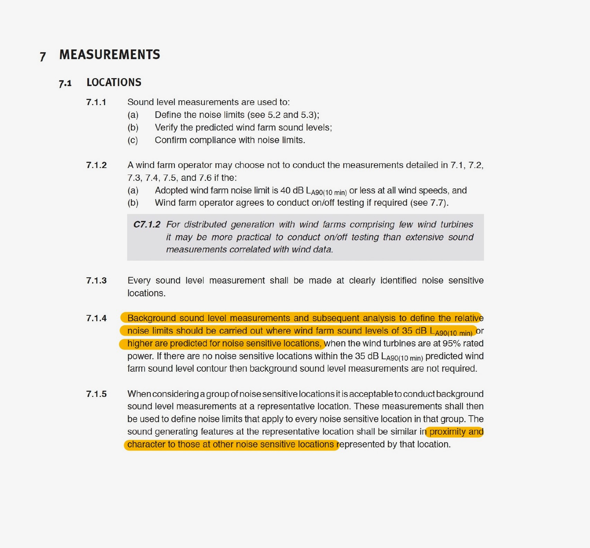
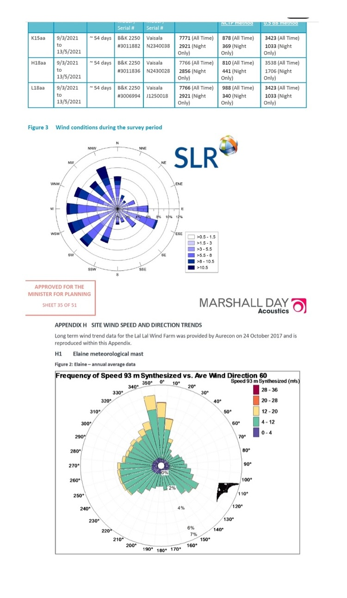
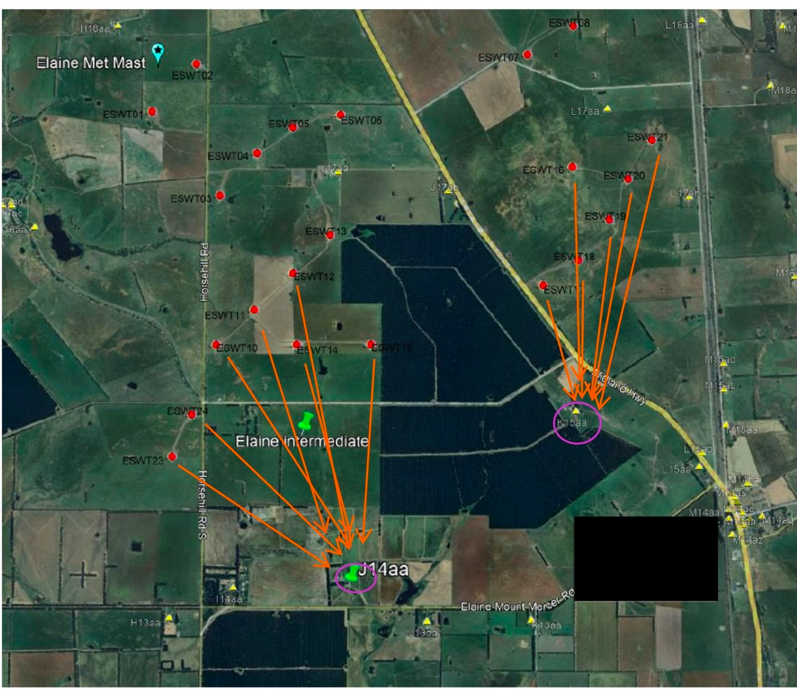
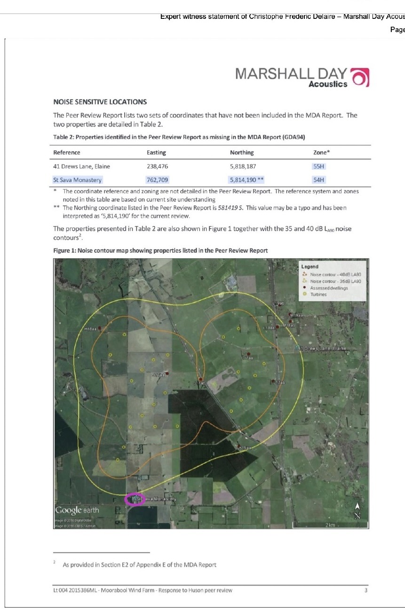
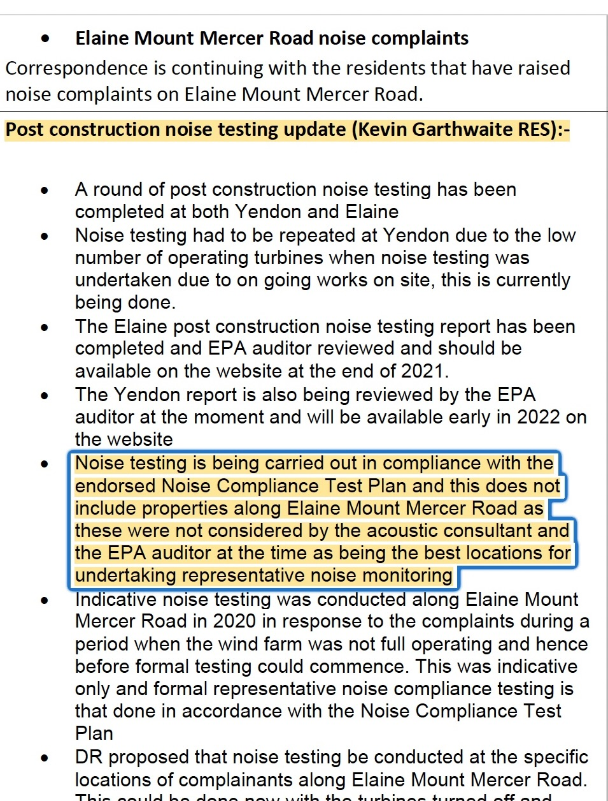
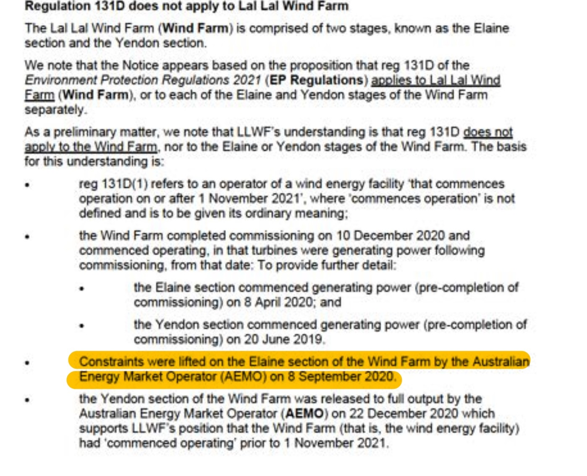
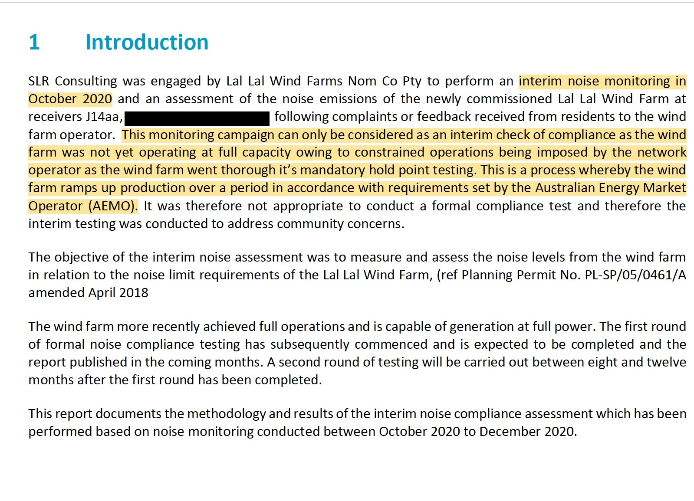
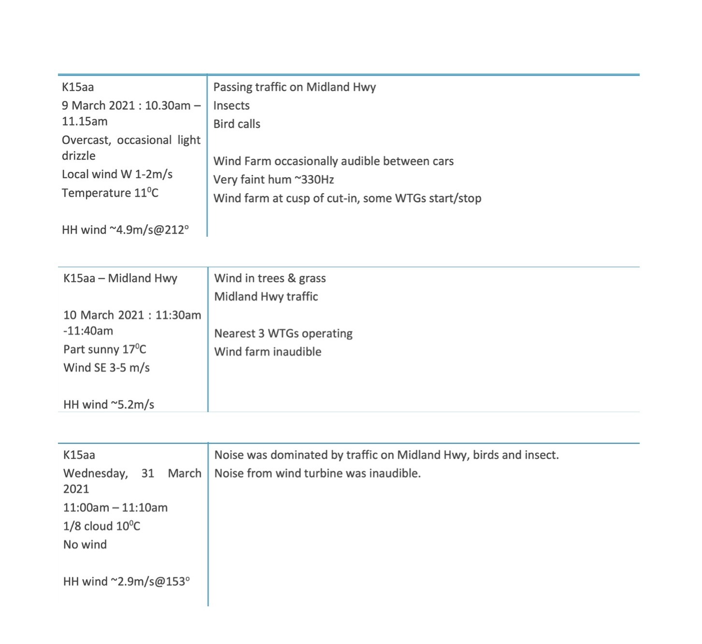

Representative Monitoring
The documentary history of representative background monitoring at the Lal Lal Wind Farm, tracing I14aa, J14aa and K15aa through the planning, technical and operational record.
How K15aa became the representative location for J14aa
This page follows the disclosed pathway by which K15aa was used as the representative background location for J14aa, while recording the earlier and later treatment of I14aa. It does not determine technical correctness. It identifies the governing requirements, receptor geography, measured background environments, derived noise limits and the comparison not expressly located in the disclosed record.

NZS 6808:2010 Clauses 7.1.4 and 7.1.5
The Standard first identifies when background monitoring should be undertaken and then states the conditions under which one location may represent a group of noise-sensitive locations.
Clause 7.1.4 — predicted 35 dB contour
Background sound level measurements and subsequent analysis to define the relative noise limits should be carried out where wind farm sound levels of 35 dB LA90(10 min) or higher are predicted for noise sensitive locations, when the wind turbines are at 95% rated power. If there are no noise sensitive locations within the 35 dB LA90(10 min) predicted wind farm sound level contour then background sound level measurements are not required.
I14aa is geographically located within the 35 dB predicted noise contour shown in the Marshall Day NCTP map, although I14aa is not identified by name on that figure. The later Sonus pre-construction assessment contains the relevant prediction datasets but does not include a noise-contour map.
Clause 7.1.5 — representative location
When considering a group of noise sensitive locations it is acceptable to conduct background sound level measurements at a representative location. These measurements shall then be used to define noise limits that apply to every noise sensitive location in that group. The sound generating features at the representative location shall be similar in proximity and character to those at other noise sensitive locations represented by that location.
The governing test is not limited to selecting the nearest approved reference receptor. The sound-generating features at the representative location must be similar in both proximity and character to those at the locations represented.

The geographic comparison
The receptor geography provides the context in which the later use of K15aa for J14aa is to be read.
I14aa
Approximately 900 metres from J14aa, with a similar rural setting and pine plantation to the south.
Within the NCTP 35 dB contourI14aa is geographically located within the 35 dB predicted noise contour shown in the Marshall Day NCTP map, although it is not identified by name on that figure.
The principal turbine sector lies to the north and north-west.
J14aa
Located in the same southern receptor corridor as I14aa and sharing similar surrounding land-use features.
Operational assessment locationThe principal turbine sector lies to the north and north-west, corresponding with the same turbines relevant to I14aa.
K15aa
The supplementary baseline location later adopted by SLR as representative of J14aa.
Different turbine sectorThe principal turbine sector lies to the north and north-east and comprises different turbines from those principally relevant to I14aa and J14aa.
Monitoring-period and longer-term Elaine wind direction
The monitoring-period wind rose and the longer-term Elaine wind-direction record provide additional context for comparing I14aa, J14aa and K15aa. Both records show a substantial northerly to north-westerly wind component.
That direction matters because I14aa and J14aa lie generally to the south and south-east of the turbine sector identified on the map below. Under northerly and north-westerly winds, those locations can therefore be downwind of turbines to their north and north-west.
K15aa has a different directional relationship to the wind farm. Its principal turbine sector lies to its north and north-east. A northerly component can place K15aa downwind of turbines to its north, but the prominent north-westerly component does not align with K15aa's principal north/north-east turbine sector in the same way that it aligns with the turbine-to-receptor direction for I14aa and J14aa.


The changing treatment of I14aa
I14aa initially selected and later removed
Marshall Day records that I14aa was initially selected under the preliminary layout and later removed after the proposed layout predicted a level below 35 dBA. The passage records a prediction-threshold decision; it does not state that I14aa was unsuitable as a representative location for nearby receptors.
St Sava Monastery identified and mapped
The Huson review identifies the monastery as an additional noise-sensitive location. Marshall Day subsequently acknowledges and maps the location together with the applicable contour information.
NCTP map places I14aa within the 35 dB contour
The Marshall Day NCTP predicted-noise-contour map geographically places I14aa within the 35 dB contour, although I14aa is not identified by name on that figure. The later Sonus pre-construction assessment contains the relevant prediction datasets but no noise-contour map. Together, those records make I14aa material to the Clause 7.1.4 and representative-monitoring sequence.


Measured background sound and derived compliance limits
Background sound and compliance limits are separate but connected. The background regression establishes the relative noise limit where it exceeds the 40 dBA base limit. The comparison below uses like-for-like all-time LA90 values.
| Hub-height wind speed | H18aa background | L18aa background | K15aa background | Largest background difference |
|---|---|---|---|---|
| 4 m/s | 28.3 dBA | 28.0 dBA | 30.0 dBA | 2.0 dB — K15aa / L18aa |
| 5 m/s | 29.7 dBA | 29.4 dBA | 31.5 dBA | 2.1 dB — K15aa / L18aa |
| 6 m/s | 31.5 dBA | 31.1 dBA | 33.1 dBA | 2.0 dB — K15aa / L18aa |
| 7 m/s | 33.6 dBA | 32.9 dBA | 34.7 dBA | 1.8 dB — K15aa / L18aa |
| 8 m/s | 35.9 dBA | 34.9 dBA | 36.3 dBA | 1.4 dB — K15aa / L18aa |
| 9 m/s | 38.4 dBA | 37.0 dBA | 37.9 dBA | 1.4 dB — H18aa / L18aa |
| Hub-height wind speed | H18aa limit | L18aa limit | K15aa limit | Largest limit difference |
|---|---|---|---|---|
| 4 m/s | 40.0 dBA | 40.0 dBA | 40.0 dBA | 0.0 dB |
| 5 m/s | 40.0 dBA | 40.0 dBA | 40.0 dBA | 0.0 dB |
| 6 m/s | 40.0 dBA | 40.0 dBA | 40.0 dBA | 0.0 dB |
| 7 m/s | 40.0 dBA | 40.0 dBA | 40.0 dBA | 0.0 dB |
| 8 m/s | 40.9 dBA | 40.0 dBA | 41.3 dBA | 1.3 dB — K15aa / L18aa |
| 9 m/s | 43.4 dBA | 42.0 dBA | 42.9 dBA | 1.4 dB — H18aa / L18aa |
Transition to K15aa as the reference location
Supplementary K15aa baseline established
SLR undertook supplementary baseline monitoring at K15aa after the earlier Marshall Day surveys at that location were affected by local extraneous noise. The resulting baseline was then used to establish operational noise limits for K15aa.
Beneficiary records SLR site visit
The Beneficiary's later-written account records discussion during an SLR site visit about the noise report, monitoring south of the wind farm, use of background data from another location and the dwelling's reported noise impacts. The account is published below as a historical Beneficiary record and is not treated as an independent transcript.
Elaine–Mount Mercer Road properties excluded from formal representative monitoring
The Community Reference Group minutes record that testing under the endorsed Noise Compliance Test Plan did not include properties along Elaine–Mount Mercer Road because those properties were not considered by the acoustic consultant and EPA auditor to be the best locations for undertaking representative noise monitoring. The same minute distinguishes the indicative testing undertaken along the road in 2020 from the later formal representative compliance testing conducted under the NCTP.
No measurement point south of the turbines
The draft EPA desktop review records that no measurement point was located south of the turbines and that northerly wind conditions may not have been adequately represented.
Proxy disputed; SLR explains reliance on K15aa
L Huson states that K15aa background data should not be used for J14aa. SLR relies on K15aa's status within the approved reference network and identifies proximity, orientation, vegetation, wind-sector and predicted-noise considerations. The presently disclosed letter does not expressly compare K15aa with I14aa under the complete Clause 7.1.5 test.



January 2024 — independent acoustic engineer and representative-monitoring enquiries
The January 2024 correspondence records questions put to SLR and Lal Lal Wind Farm concerning the representative-monitoring pathway and the Planning Permit requirement for acoustic compliance reports to be prepared by a suitably qualified and experienced independent acoustic engineer.
22 January 2024: the Beneficiary sent questions to the SLR Technical Director concerning the K15aa monitoring position, the J14aa interim assessment, the K15aa background-report requirement, the Elaine post-construction assessment and whether SLR had been informed of earlier background monitoring at St Sava Monastery (I14aa).
The disclosed email chain records the SLR Technical Director forwarding one enquiry internally with the statement that he would not respond unless instructed to do so.
The Beneficiary then asked whether that position was consistent with the Planning Permit requirement for acoustic compliance reports to be prepared by a suitably qualified and experienced independent acoustic engineer.
24 January 2024: the Beneficiary made a formal enquiry to Lal Lal Wind Farm asking it to explain its understanding of “Independent Acoustic Engineer” in relation to the Planning Permit requirements.
20 May 2021 — Beneficiary observations of SLR site visit
The Beneficiary retained a written account of an SLR site visit to the dwelling on 20 May 2021. The document records the Beneficiary's recollection of the visit and was later provided to the Beneficiary's solicitor.
The account records an approximate arrival time of 7:10–7:15 am and departure between 8:15–8:20 am. It records discussion of the noise report, the absence of testing south of the Lal Lal Wind Farm, the use of background noise data from more than 2 km from the dwelling, reported noise and sleep impacts, possible mitigation measures, an inspection of the dwelling and a sound-related application shown during the visit.
Several remarks are attributed to the SLR representative in the Beneficiary's written account. Those attributed remarks are reproduced within the source document as part of the historical record.
Operational transition before formal compliance testing
The disclosed record distinguishes between commencement of electricity generation, progressive removal of AEMO operational constraints, commissioning of the wind farm, achievement of full operational capacity and commencement of formal post-construction compliance testing.
LLWF later recorded that AEMO constraints on the Elaine section were lifted on 8 September 2020. SLR's Interim Noise Monitoring report records that monitoring at J14aa commenced in October 2020, but that the campaign could only be treated as an interim check of compliance because the wind farm was not yet operating at full capacity and remained subject to mandatory hold-point testing imposed by the network operator. The report therefore states that formal compliance testing was not appropriate at that stage.


What the disclosed record establishes
| Documentary question | Presently disclosed record |
|---|---|
| When does NZS 6808 indicate background monitoring should occur? | Where wind farm sound levels of 35 dB LA90(10 min) or higher are predicted at noise-sensitive locations under the Clause 7.1.4 conditions. |
| Does NZS 6808 permit representative background monitoring? | Yes. Clause 7.1.5 permits measurements at a representative location for a group of noise-sensitive locations. |
| What test applies? | The representative location's sound-generating features must be similar in proximity and character to those at the locations represented. |
| Why is I14aa material? | It lies approximately 900 metres from J14aa, has similar surrounds, relates to the same turbines to the north and north-west, and is geographically located within the 35 dB contour shown on the Marshall Day NCTP map, although it is not identified by name on that figure. |
| How does K15aa differ geographically? | K15aa relates principally to turbines to its north and north-east and has a local sound environment repeatedly described in the 2021 attended observations as being influenced by Midland Highway traffic, together with birds, insects and wind in vegetation. On 9 March 2021 the wind farm was recorded as occasionally audible between passing vehicles; on 10 March 2021 the nearest three turbines were operating but the wind farm was recorded as inaudible; and on 31 March 2021 the recorded sound environment was dominated by Midland Highway traffic, birds and insects, with wind turbine noise inaudible. By contrast, J14aa is approximately 2.3 km from the Midland Highway, where highway traffic is not a comparable dominant feature of the local sound environment. These observations describe the acoustic environment documented at K15aa; they do not themselves determine whether K15aa was representative of J14aa under NZS 6808:2010 Clause 7.1.5. |
| How was K15aa used operationally? | SLR treated K15aa as the relevant reference receptor and representative background location for J14aa. |
| Was an express I14aa–J14aa–K15aa comparison identified? | Not presently located within the disclosed documentary record reviewed for this page. |
| What does the interim J14aa report establish about the monitoring stage? | It records that October–December 2020 monitoring was an interim assessment, not a formal compliance test, because the wind farm was not yet operating at full capacity and remained subject to AEMO hold-point testing. |

The comparison not presently identified
The disclosed record explains the earlier removal of I14aa by reference to a prediction below 35 dBA, geographically places I14aa within the 35 dB contour shown on the Marshall Day NCTP map, and records the operational reliance on K15aa for J14aa. It also shows that I14aa and J14aa are approximately 900 metres apart, have similar surrounding features and relate to the same turbines to their north and north-west, whereas K15aa relates to a different turbine sector to its north and north-east.
What has not presently been identified is an express comparative assessment applying the Clause 7.1.5 requirements to all three locations while also addressing their measured background environments, derived limits, surrounding sound-generating features and relationship to the relevant turbines.